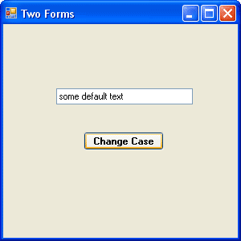
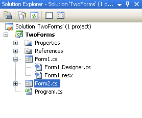
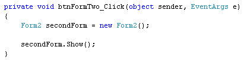
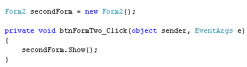

Creating Multiple Forms in C# .NET
There aren't many programmes that have only one form. Most programmes have other forms that are accessible from the main one that loads at start up. In this section, you'll learn how to create programmes with more than form.
The programme we'll create is very simple one. It will have a main form with a text box and a button. When the button is clicked, it will launch a second form. On the second form, we'll allow a user to change the case of the text in the text box on form one.
Here's what form one looks like:

Design the above form. Set the Name property of the text box to txtChangeCase. For the Text property, add some default text, but all in lowercase letters. Set the Name property of the button to btnFormTwo.
Adding a new form to the project is easy. Click Project from the menu bar at the top of the Visual C# software. From the Project menu, select Add New Windows Form. You'll see the Add New Item dialogue box appear. Make sure Windows Form is selected. For the Name, leave it on the default of Form2.cs. When you click OK, you should see a new blank form appear:
It will also be in the Solution Explorer on the right:

Adding the form to the project is the easy part - getting it to display is an entirely different matter!
To display the second form, you have to bear in mind that forms are classes. When the programme first runs, C# will create an object from your Form1 class. But it won't do anything with your Form2 class. You have to create the object yourself.
So double click the button on your Form1 to get at the coding window.
To create a Form2 object, declare a variable of Type Form2:
Form2 secondForm;
Now create a new object:
secondForm = new Form2();
Or if you prefer, put it all on one line:
Form2 secondForm = new Form2();
What we've done here is to create a new object from the Class called Form2. The name of our variable is secondForm.
To get this new form to appear, you use the Show( ) method of the object:
secondForm.Show();
Your code should now look like this:

Run your programme and test it out. Click your button and a new form should appear - the blank second form.
However, there's a slight problem. Click the button again and a new form will appear. Keep clicking the button and your screen will be filled with blank forms!
To stop this from happening, move the code that creates the form outside of the button. Like this:

Try your programme again. Click the button and you won't get lots of forms filling the screen.
In the next lesson, you'll learn what a Modal form is.